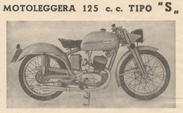
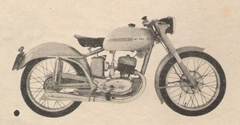

MODELLO 125 S (1952)
Modello molto raro, pur essendo riportata in diverse pubblicità e depliant, credo di averne vista solo una.
 Depliant 1952 |
 Pubblicità 1952 |
SCHEDA TECNICA
MOTORE: Monocilindrico 2 tempi, alesaggio e corsa 52 x 58 mm
Cilindrata effettiva 123 cc, potenza effettiva 6 CV a 6000 giri, rapporto di compressione 1÷7
Velocità massima 100 km/h
Carburatore Dell'Orto RB 22
Accensione a spinterogeno
Cambio a 4 rapporti, trasmissione primaria e secondaria a catena
Frizione in bagno d'olio a dischi multipli
TELAIO A culla singola
Forcella anteriore a parallelogramma in lamiera stampata/telescopica teleidraulica
Sospensione posteriore a forcellone oscillante con ammortizzatore idraulico
Ruota anteriore: 2,50 x 19 Ruota posteriore: 2,50 x 19
Capacità serbatoio 12 litri
Potenza impianto elettrico 35-45 W
Consumo norme CUNA 1 litri/35 km
Candela Marelli CW --- AT